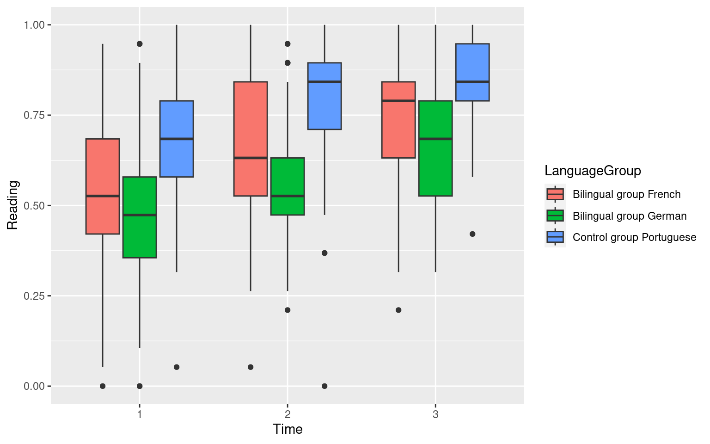
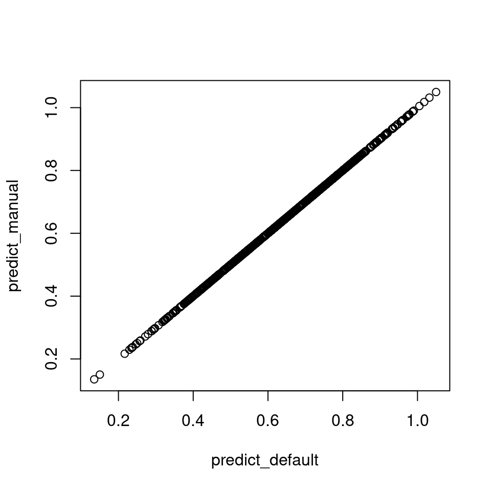
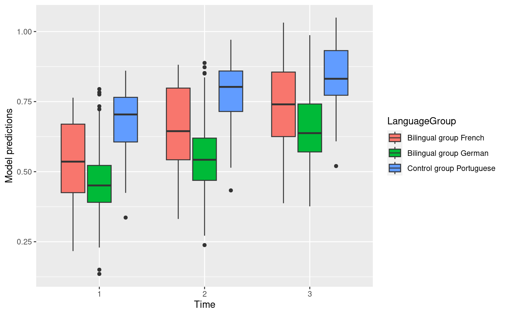

Tutorial: Obtaining directly interpretable regression coefficients by recoding categorical predictors
R
contrast coding
mixed-effects models
multiple regression
tutorial
research questions
Author
Jan Vanhove
Published
May 23, 2020
The output of regression models is often difficult to parse, especially when categorical predictors and interactions between them are being modelled. The goal of this tutorial is to show you how you can obtain estimated coefficients that you can interpret directly in terms of your research question. I’ve learnt about this technique thanks to Schad et al. (2020), and I refer to them for a more detailed discussion. What I will do is go through three examples of increasing complexity that should enable you to apply the technique in your own analyses.
Example 1: No interactions, no random effects
Let’s start off nice but not too easy by analysing an experiment with three conditions and only one observation per participant.
This dataset we’ll work with comes from a study by Vanhove (2019) and is available here. The details hardly matter, but there were three experimental conditions: information, no information and strategy. The no information condition serves as the baseline control condition, and the information and strategy conditions serve as the treatment conditions. The expectation was that the treatment conditions would outperform the control condition on the outcome variable (here: ProportionCongruent), and I was also interested in seeing if the strategy condition outperformed the information condition.
The condition means already show that the participants in the information condition did not in fact outperform those in the no information condition, but neither that nor the small sample size should keep us from using these data for our example.
d <-read.csv("http://homeweb.unifr.ch/VanhoveJ/Pub/Data/Vanhove2018.csv")table(d$Condition)
information no information strategy
15 14 16
tapply(d$ProportionCongruent, d$Condition, mean)
information no information strategy
0.517 0.554 0.627
If we fit the model directly, R will apply the default coding scheme to the categorical predictor (viz., treatment coding):
# The newest version of R doesn't recode strings as factors automatically,# so code Condition as a factor for good measure.d$Condition <-factor(d$Condition)m_default <-lm(ProportionCongruent ~ Condition, data = d)summary(m_default)$coefficients
Estimate Std. Error t value Pr(>|t|)
(Intercept) 0.5172 0.0512 10.101 8.31e-13
Conditionno information 0.0369 0.0737 0.501 6.19e-01
Conditionstrategy 0.1099 0.0713 1.542 1.31e-01
By default, the information condition is chosen as the reference level because it’s first in the alphabet. That is, the 0.52 is the estimated mean for the information condition. The second estimate (0.04) is the difference between the mean for the no information condition and that of the reference level (information). Similarly, the third estimate (0.11) is the difference between the mean for the strategy condition and that of the reference level (information). These estimates are all correct, and they’re fairly easy to interpret once you’ve figured out what the reference level is. But if we want to, we can obtain estimated coefficients that map more directly onto the research questions by recoding the Condition variable manually.
Condition has three levels, and this means that we can obtain at most three estimated coefficients for it. It’s also possible to obtain fewer than the maximum, but this is not something I will go into here.
The first step is to write out what you want the model’s intercept to represent as a null hypothesis. In this example, it makes sense that the intercept should the mean performance in the no information condition. Written as a null hypothesis, this becomes \(\mu_{\textrm{no info}} = 0\). This null hypothesis is a bit silly, but that’s not important here, just go with it; the equation is easy enough. Then, rearrange the equation such that the right-hand side reads 0. This is already the case here. Finally, add the factor’s remaining levels to the left-hand side of the equation, but multiplied by 0. You’re just adding 0s to the left-hand side of the equation, which doesn’t affect it. For clarity, I’ve made it clear that \(\mu_{\textrm{no info}} = 1\mu_{\textrm{no info}}\). The result looks like this:
Make sure that in the rearranged equation, the levels appear in the same order as they do in R. You can check the order of the levels using levels(). By default, the order is alphabetical. You can change the order of the factor levels, but then you’ll also need to change the order in which the coefficients appear in the rearranged equation:
levels(d$Condition)
[1] "information" "no information" "strategy"
The second step is to write out null hypotheses for the comparisons that you want the remaining coefficients to estimate. For the sake of the exercise, let’s say that I want the first remaining coefficient to estimate the difference between the mean of the control group (\(\mu_{\textrm{no info}}\)) and the mean of the means of the two other groups (i.e., \(\frac{1}{2}(\mu_{\textrm{info}} + \mu_{\textrm{strategy}})\)). First write this as a null hypothesis:
Note that I write the ‘focus’ of the comparison on the left-hand side and what it’s being compared to on the right-hand side. This will make the signs of the coefficients we later get easier to interpret. Then, bring all \(\mu\) terms to the left-hand side:
Do not multiply any terms in the equation, i.e., do not write \(1\mu_{\rm{info}} + -2\mu_{\rm{no\ info}} + 1\mu_{\rm{strategy}} = 0\) so that you don’t have to work with fractions. The hypotheses you’ll test will be the same, but the output will be more confusing than if you just rearrange the coefficients but keep the fractions.
For the final coefficient, let’s say that I want to estimate the difference in means between the info and strategy condition. Again, start from the corresponding null hypothesis (i.e., that these means are the same), and then bring all \(\mu\)s to the left-hand side while adding the missing factor levels:
The third step is to put the coefficients of the rearranged equations into a hypothesis matrix. As you can see, each line in this matrix contains the coefficients belonging to the \(\mu\) terms in the three equations above:
You can check this yourselves, but the intercept now shows the mean of the no information condition, the first term (ConditionH01) estimates the difference between the no information mean and the mean of the means of the other two condidition, and the second term (ConditionH02) estimates the difference between the strategy mean and the information mean.
Example 2: No interactions, but random effects
For the second and third example, I’ll use data from Pestana et al. (2018), who measured the Portuguese reading skills of Portuguese children in Portugal, French-speaking Switzerland, and German-speaking Switzerland at three points in time. The data are available as part of the helascot package.
library(helascot)library(tidyverse)library(lme4)# Combine data and only retain Portuguese test datad <- skills %>%left_join(background, by ="Subject") %>%filter(LanguageTested =="Portuguese") %>%filter(!is.na(Reading))# Code Time and LanguageGroup as factorsd$Time <-factor(d$Time)d$LanguageGroup <-factor(d$LanguageGroup)# Draw graphggplot(data = d,aes(x = Time, y = Reading,fill = LanguageGroup)) +geom_boxplot()

There are up to three observations per child (Time 1, 2 and 3), and the children are clustered in classes. We will take this into account during the analysis using random effects by child and by class.
For the sake of this example, let’s say we’re interested in estimating the development of reading skills through time. The following model estimates the effect of Time and allows for this effect to vary between classes. Since there is only one data point per Subject per Time, no by-subject random slope for Time was estimated.
m_default <-lmer(Reading ~ Time + (1+Time|Class) + (1|Subject), data = d)summary(m_default)$coefficients
Estimate Std. Error t value
(Intercept) 0.532 0.0239 22.25
Time2 0.104 0.0111 9.38
Time3 0.194 0.0161 12.08
When using R’s default coding, the (Intercept) represents the average reading skill score at Time 1, the next coefficient estimates the different in reading skill scores between Time 2 and Time 1, and the third coefficient estimates the difference between Time 3 and Time 1. This is fine, but let’s say we wanted to estimate the difference between Time 3 and Time 2 directly. We can obtain this estimate by coding the predictors ourselves.
In the equations below, the \(\mu\)’s are in the same order as R knows them:
levels(d$Time)
[1] "1" "2" "3"
The average performance at Time 1 is a reasonable choice for the intercept, so let’s stick with that. The silly null hypothesis is that \(\mu_{T1} = 0\), which we can elaborate with \(\mu_{T2}\) and \(\mu_{T3}\) as follows:
If we want the next coefficient to estimate the difference between the average reading skill scores at Time 2 and Time 1, we need the null hypothesis that these average reading skill scores are the same, i.e., \(\mu_{T2} = \mu_{T1}\). (Remember to put the ‘focus’ of the comparison on the left.) From there:
Similarly, if we want the third coefficient to estimate the difference between the average reading skill scores at Time 3 and Time 2, we need the null hypothesis that these average reading skill scores are the same, i.e., \(\mu_{T3} = \mu_{T2}\):
Put the coefficients in the hypothesis matrix, convert this hypothesis matrix to a contrast matrix, apply this contrast matrix to the factor Time, and refit the model.
# Put coefficients in hypothesis matrixHm <-rbind(H00 =c(T1 =1, T2 =0, T3 =0),H01 =c(T1 =-1, T2 =1, T3 =0),H02 =c(T1 =0, T2 =-1, T3 =1))# Convert to contrast matrixCm <-ginv2(Hm)# I'm going to copy Time so we can reuse it in example 3:d$Time2 <- d$Time# Apply contrast matrix to factorcontrasts(d$Time2) <- Cm[, -1]# Refit modelm_manual <-lmer(Reading ~ Time2 + (1+Time2|Class) + (1|Subject), data = d)summary(m_manual)$coefficients
Estimate Std. Error t value
(Intercept) 0.5317 0.0239 22.25
Time2H01 0.1040 0.0111 9.38
Time2H02 0.0904 0.0137 6.59
As you can see, the third coefficient now estimates the difference between the average reading skill score at T3 and at T2. Compared to manually computing this difference from the first model’s output, the main advantage of coding the predictors yourself is that you also obtain a measure of the uncertainty about the estimate of interest (e.g., the standard error, or a confidence interval).
Example 3: Interactions and random effects
Finally, let’s take a look at interactions. Still working with the dataset from the second example, we can fit a model that contains an interaction between Time and LanguageGroup, i.e., that allows the effect of Time to differ between the three language groups. Since Time varies within Class, but LanguageGroup doesn’t, we can’t estimate a by-class random slope for Language Group. I’m going to ignore the warning about the singular fit here, because it isn’t related to the topic of the tutorial and I don’t have too many other datasets where interactions need to be modelled.
Estimate Std. Error t value
(Intercept) 0.5422 0.0233 23.281
Time2 0.1159 0.0198 5.850
Time3 0.1915 0.0279 6.859
LanguageGroupBilingual group German -0.0893 0.0316 -2.822
LanguageGroupControl group Portuguese 0.1316 0.0373 3.532
Time2:LanguageGroupBilingual group German -0.0196 0.0272 -0.720
Time3:LanguageGroupBilingual group German 0.0164 0.0373 0.440
Time2:LanguageGroupControl group Portuguese -0.0121 0.0309 -0.390
Time3:LanguageGroupControl group Portuguese -0.0287 0.0451 -0.636
I’m not going to go over the interpretation of all of these coefficients; the point is that they’re not too informative, but that we can obtain more useful estimates by recoding the predictors. To do that, I prefer to combine the combinations of the factors involved in the interaction into a single variable, which I’ll call Cell:
# Combine combinations of Time and Language group into 1 factord$Cell <-factor(paste(d$Time, d$LanguageGroup))table(d$Cell)
1 Bilingual group French 1 Bilingual group German
104 104
1 Control group Portuguese 2 Bilingual group French
74 105
2 Bilingual group German 2 Control group Portuguese
97 75
3 Bilingual group French 3 Bilingual group German
105 93
3 Control group Portuguese
69
We will eventually need to refer to these cells in the same order as they’re known in R:
# Order of the factor levelslevels(d$Cell)
[1] "1 Bilingual group French" "1 Bilingual group German"
[3] "1 Control group Portuguese" "2 Bilingual group French"
[5] "2 Bilingual group German" "2 Control group Portuguese"
[7] "3 Bilingual group French" "3 Bilingual group German"
[9] "3 Control group Portuguese"
Let’s think about what we want our estimates to mean. I think it would make sense for the intercept to represent the mean reading skill score at Time 1 across the three language groups. Then, I’d like for the next coefficients to express the average progress (across language groups) from Time 1 to Time 2 and from Time 2 to Time 3. Next, I’d like to know, at each time point, what the average difference between the Portuguese and the bilingual (Swiss) children is, and what the average difference between the Portuguese-French and the Portuguese-German bilinguals is.
Now, in what follows, you’re going to see some fairly long equations. They may look daunting, but they’re really easy: like before, we’re going to express what we want the coefficients to mean as null hypotheses. It’s just that this time we have to include nine \(\mu\)’s per equation.
The intercept represents the grand mean of the Time 1 cells. The silly corresponding null hypothesis is that this grand mean is 0: \(\frac{1}{3}(\mu_{1,F} + \mu_{1,G} + \mu_{1,P}) = 0\).
Now for comparisons between the language groups at each point in time. For each time, I want a term testing if the Portuguese on the one hand and the French- and German-speaking pupils on the other hand perform the same as well as one if the French- and German-speaking pupils differ amongst themselves.
The fourth term represents the difference between the mean of the Portuguese scores at Time 1 and the grand mean of the two bilingual groups’ performance at Time 1:
The coefficients mean exactly what it says on the tin. There is just one problem: I didn’t include a random slope that capture the varying effect of Time by Class yet. Adding a by-class random slope for Cell wouldn’t work: you’d end up estimating an enormous matrix of random effects since Cell has nine levels. Instead, we’ll have to first refit the model using the dummy variables in the contrast matrix of Cell as separate variables:
# Add the dummy variables in the contrast matrix of Cell# to the dataset as separate variablescontrast_matrix <-data.frame(Cm[, -1],Cell =levels(d$Cell))d <-merge(d, contrast_matrix, by ="Cell")# Refit the model using these separate dummy variablesm_manual <-lmer(Reading ~ T2vT1 + T3vT2 + T1_PtvsBi + T1_FrvsGe + T2_PtvsBi + T2_FrvsGe + T3_PtvsBi + T3_FrvsGe + (1|Class) + (1|Subject), data = d)summary(m_manual)$coefficients
The output is exactly the same as above. Now we need to think about which of these estimates can actually vary by Class. If you think about the way we coded these predictors, T2vsT1 and T3vT2 capture the effect of Time, whereas the other predictors capture the effects of LanguageGroup at different times. The effect of Time can vary according to Class, but the effects of LanguageGroup can’t (each Class belonged to only one LanguageGroup). So if we want random slopes of Time by Class, we need to let the effects of T2vT1 and T3vT2 vary by class:
The warning isn’t relevant to the purposes of this tutorial. As a sanity check, we can compare the predictions of m_manual and m_default to confirm that m_manual is the same model as m_default, just with parameter estimates that are easier to interpret:
# (I don't know why I need to specify 'newdata'...)d$predict_default <-predict(m_default, newdata = d)d$predict_manual <-predict(m_manual, newdata = d)plot(predict_manual ~ predict_default, d)

Both models make the same predictions, and the predictions align reasonably well with the data observed:
ggplot(data = d,aes(x = Time, y = predict_manual,fill = LanguageGroup)) +geom_boxplot() +ylab("Model predictions")

What if it doesn’t work?
If, having specified your own hypothesis matrix, some lines in the regression output contain NA, the reason is probably that some of the rows in your hypothesis matrix are combinations of some of the other rows. In essence, you’re asking the model to answer the same question twice, so it only answers it once. Reformulating the hypotheses will usually work.
References
Berthele, Raphael and Amelia Lambelet (eds.). 2018. Heritage and school language literacy development in migrant children: Interdependence or independence? Multilingual Matters.
Pestana, Carlos, Amelia Lambelet and Jan Vanhove. 2018. Reading comprehension development in Portuguese heritage speakers in Switzerland (HELASCOT project). In Raphael Berthele and Amelia Lambelet (Eds.), Heritage language and school language literacy development in migrant children: Interdependence or independence? (pp. 58-82). Bristol, UK: Multilingual Matters. http://doi.org/10.21832/BERTHE9047
Schad, Daniel J., Shravan Vasishth, Sven Hohenstein and Reinhold Kliegl. 2020. How to capitalize on a priori contrasts in linear (mixed) models: A tutorial. Journal of Memory and Language 110. https://doi.org/10.1016/j.jml.2019.104038
Vanhove, Jan. 2019. Metalinguistic knowledge about the native language and language transfer in gender assignment. Studies in Second Language Learning and Teaching 9(2). 397-419. https://doi.org/10.14746/ssllt.2019.9.2.7
Software versions
Please note that I reran the code on this page on August 6, 2023.